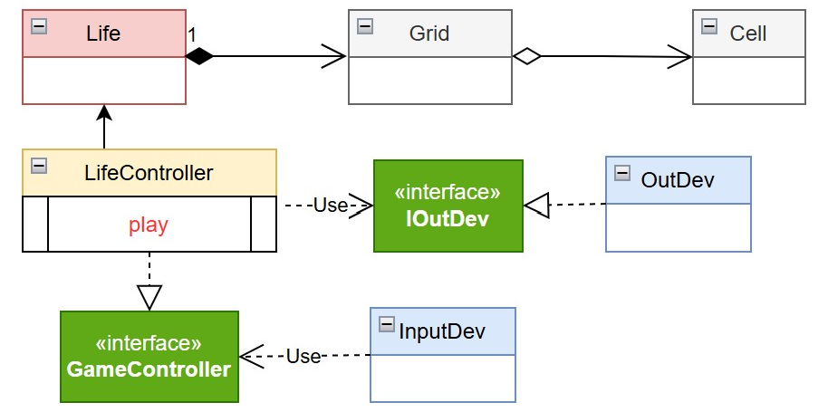

By Cesare Tomasi
By Cesare Tomasi
Goal: Realizzazione in Java del GAME OF LIFE DI CONWAY.
R1: Realizzare una versione in Java del gioco Life di Conway, come gioco zero-player. Il gioco consiste nell’introdurre una Griglia di Celle il cui stato (cella ‘viva’ o cella ‘morta’) evolve come stabilito dallle regole di ConwayLife
R2: L’utente umano deve poter:
Dopo aver parlato col committente, formalizzo i seguenti modelli di Cell (entità unitaria che può essere viva o morta), Grid (entità bidimensionale composta da celle) e Life (descrizione formale regole del gioco):

Necessari per esprimere tutti quei requisiti relativi alle entità modellate, ma che le sole interfacce non sono in grado di comunicare autonomamente:
Implementazioni (sottoforma di classi) in codice Java delle interfacce in precedenza definite:
By Cesare Tomasi